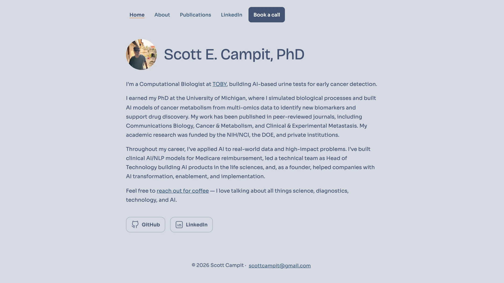
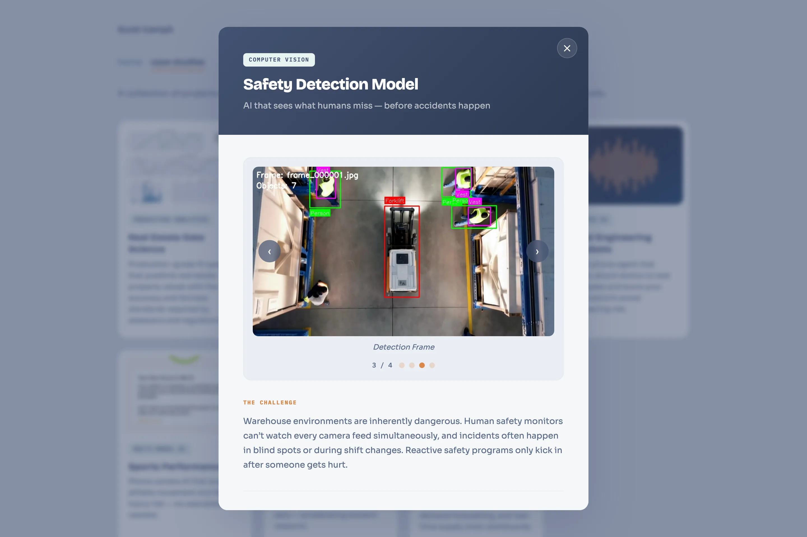
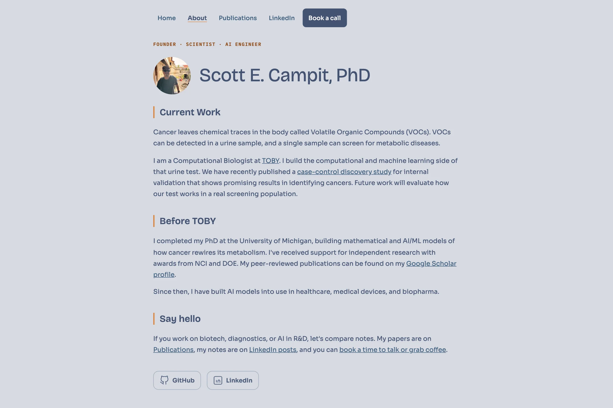
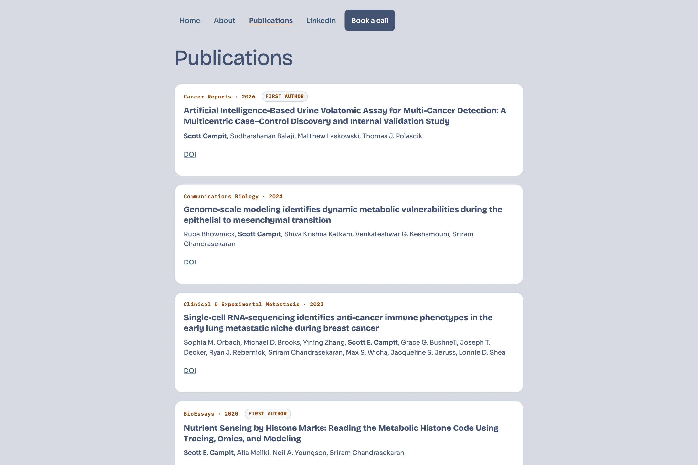
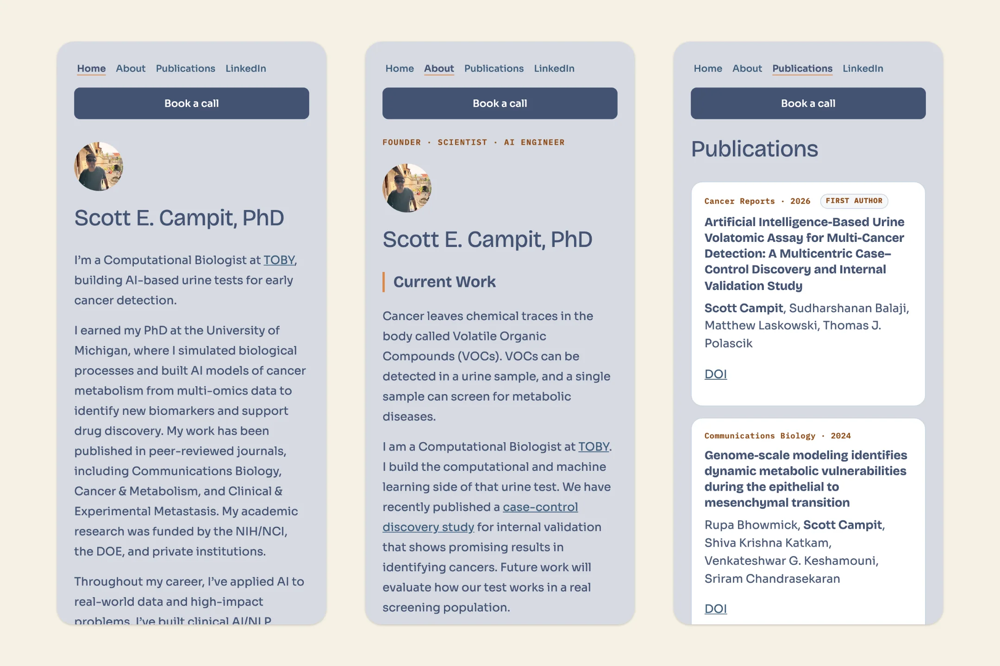
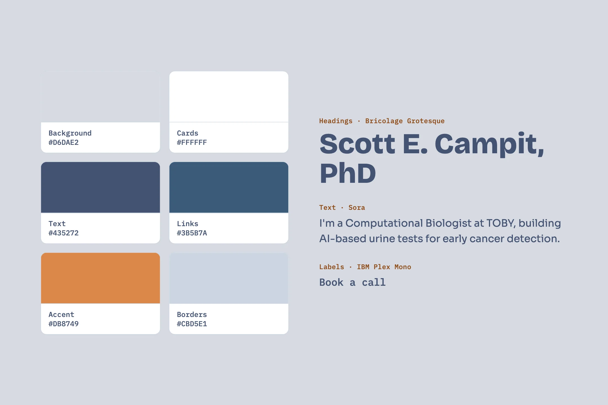

Scott Campit
Website design, copy and build for a computational biologist's personal site.
Web Design · 2026

The brief
Scott Campit is a computational biologist at TOBY, where he builds AI-based urine tests for early cancer detection. The site had to introduce him at a glance and make it easy to get in touch.
The first version
I designed and built the first version in April 2026, when Scott was running Torchstack, an AI studio, and taking on client projects. Therefore the selected projects to showcase each had in-depth case studies for what he did for those clients.

What changed
Scott now works full time as a computational biologist at TOBY, so the focus moved from client work to his research. I rewrote the copy around his computational work, removed the client case studies, and added a Publications page for his papers and an About page for his current work and background. The home page kept its structure, and the palette, type and layout stayed, so the update reads as the same site.



Color and type
The palette is a pale gray-blue background with slate text, white cards and one warm orange accent, used sparingly. Headings are set in Bricolage Grotesque, text in Sora, and small labels in IBM Plex Mono.

Result
The site is live at scottcampit.com.
What this means for your product
When someone's work changes, their site has to change with it. If the colors, type and layout are set once and built into the code, that change is new copy and two new pages, not a redesign.
Deliverables
- Color palette and type
- Page design, copy and front-end build